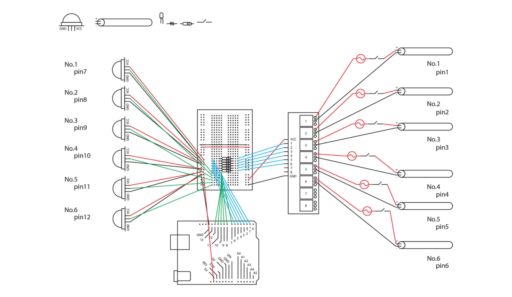
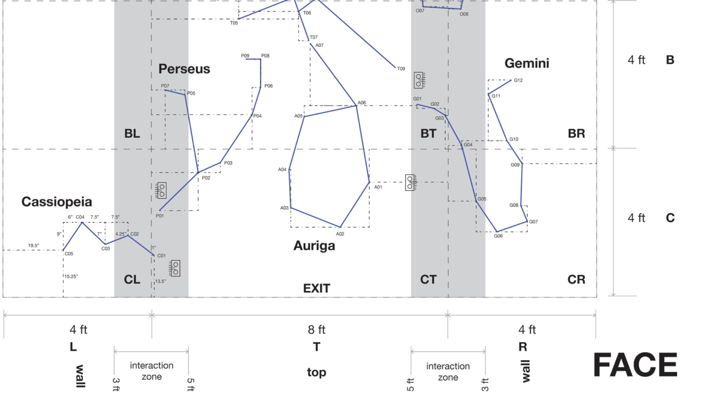
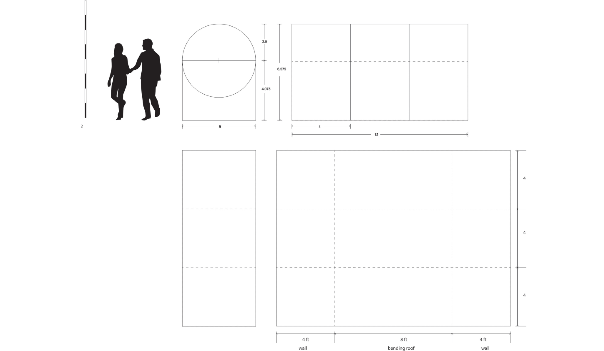

<!DOCTYPE html>
<html>
    <head>
        <meta charset="utf-8" />
        <meta name="viewport" content="width=device-width, initial-scale=1">
        <title>Galactic Walk</title>
        <link rel="stylesheet" type="text/css" href="./css/styles.css">
        <link rel="preconnect" href="https://fonts.googleapis.com">
        <link rel="preconnect" href="https://fonts.googleapis.com">
        <link rel="preconnect" href="https://fonts.gstatic.com" crossorigin>
        <link href="https://fonts.googleapis.com/css2?family=Courier+Prime:ital,wght@0,400;0,700;1,400;1,700&family=Montserrat:ital,wght@0,100..900;1,100..900&display=swap" rel="stylesheet">
        <link rel="icon" type="image/png" href="dy_favicon.png">
    </head>
</html>
<body>
    <div class="mode-toggle">
        <button id="darkModeToggle">
            
        </button>
    </div>
    <header>
        <div class="language-selector">
            <a href="#" class="active">KR</a>
            <div class="lang-divider"></div>
            <a href="#">EN</a>
            <div class="lang-divider"></div>
            <a href="#">CN</a>
        </div>
    </header>
    <div class="sub-contents">
        
        <div class="sub-contents-text">
            <div class="sub-text-title">Overview</div>
            <div class="sub-text-p">
                Galactic Walk는 사용자가 우주를 직접 체험하는 듯한 경험을 제공하는 Immersive design 프로젝트로, 별들로 가득 찬 터널을 통해 우주와의 연결을 상징적으로 표현합니다. 이 터널 안에서 사용자는 센서들을 찾아내고, 6개의 LED 별자리를 활성화시키며 상호작용을 통해 공간을 탐험할 수 있습니다.
                <br/><br/>
                터널을 지나가면, 블랙라이트가 켜지면서 형광 페인트로 그려진 별들이 선명하게 나타나고, 이는 사용자에게 마치 실제 우주 공간을 걷는 듯한 느낌을 줍니다. 또한, UV 손전등을 이용해 터널 안을 자유롭게 탐험하면서 숨겨진 전도성 잉크 타겟을 찾아낼 수 있으며, 이 타겟을 누르면 LED로 이루어진 별자리가 하나씩 켜져 더욱 깊은 상호작용이 가능합니다.
                <br/><br/>
                50%의 개발 파트를 맡았으며 아두이노를 이용하여 모션 센서와 초음파 센서를 연결 하였습니다. 기술적 요소들로 사용자의 움직임에 반응하여 터널의 조명과 별자리의 점등을 조절함으로써, 더욱 몰입감 있는 경험을 제공하도록 설계하였습니다.
                <br/><br/>
                Galactic Walk는 단순한 공간 디자인을 넘어, 기술과 예술이 결합된 혁신적인 프로젝트로, 사용자들이 감정적으로 우주와 연결될 수 있도록 돕고, 그 과정에서 우주에 대한 호기심과 탐구심을 자극하는 것을 목표로 하였습니다.
            </div>
        </div>
                
        
        
        
        
        
        
        

    <footer>
        <p>&copy; 2024 Dayeong Kim. All rights reserved.</p>
    </footer>

    <script src="./js/scripts.js"></script>
</body>